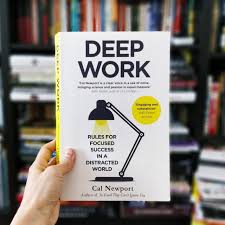

Diqqat
Diqqat - lupaga o’xshaydi. Lupa quyosh nurini bir joyga jamlaydi va hattoki yog’chniham yondirib yuborishi mumkun, diqqat esa sizning emotsiyalaringiz, aqlingiz, fikr-hayolingiz, sezish a’zolaringiz, hotirangizni bir joyga jamlaydi. Misol uchun barcha sezish azolaringiz bir joyga jamlangan, ammo hayolingiz boshqa bir narsaga qaratilgan - bu diqqat emas.
Kun davomida bizni har hil narsalar chalg’itadi, eng tarqalganlari bu smartfonimizdagi habarlar, qo’ng’iroqlar va ijtimoiy tarmoqlar. Bu alohida insonlarning aybi emas, bu muhit sababli sodir bo’ladi. Ammo eng kamida vahli ertalab yoki kechki payt diqqat qilishimiz kerak.
Ko’pchilik 2 soat diqqat qilishdan ko’ra 8 soat band bo’lishga rozilar. Va menimcha bu barcha aytayotgan “vaqt yetmasligi”ning sababi.
Qanday diqqat qilish mumkun ? Har safar diqqat qilmoqchi bo’lganingizda ichingizda kurash ketad. Masalan: ish qilsammikin yoki YouTube ko’rsammikin, kitob o’qisammikin yoki o’yin o’ynasammikin. Bu kurashning kuchliligining sababi - “Biz diqqat qaratishimiz kerak bo’lgan narsa bitta, chalg’ishimiz mumkun bo’lgani ko’p”. Bu jangni shunday tasavvur qilishimiz mumkun, siz 10ta sportchiga qarshi kurashishingiz kerak, qanday uslub qo’llaysiz? Albatta qochish. Demak diqqat qilishimiz uchun, chalg’ishimiz mumkun bo’lgan narsalardan qochamiz. Misol uchun smartfonga chalg’imaslik uchun ijtimoiy tarmoqlarni va chalg’itadigan ilovalarni o’chirib tashlash/blokga solish (kerakli ilovalarni boshqa qurilmada ishlatish), ekarnni oq-qora qilish (sizni ekranning rangbarangliligi chalg’itmasligi uchun) (Android uchun настройки → расширенные настройки→ для разработчиков → имитация аномалии → монохроматизм).
Ko’pchiligimiz ishni reja qilamiz, ammo dam olishniham reja qilishimiz kerak. Aks holda dam olish kunlarimiz bekorchilik bilan o’tib ketadi.
Diqqat qilsak natija bo’ladi, natija bo’lganida motivatsiya kattalashadi, diqqat qilishni davom etsak daromadimiz oshadi, daromadimiz oshganidan so’ng vaqtimizni sotib olishimiz mumkun bo’ladi, sotib olingan vaqtimizni yangi bilim olishga ishlatsak bo’ladi, bilim olganimizdan so’ng ko’proq odamlar bilan tanishamiz, tanishlarimiz ko’paygandan so’ng tanilishni boshlaymiz va keginchalik kattaroq ishlar qilishni boshlaymiz.